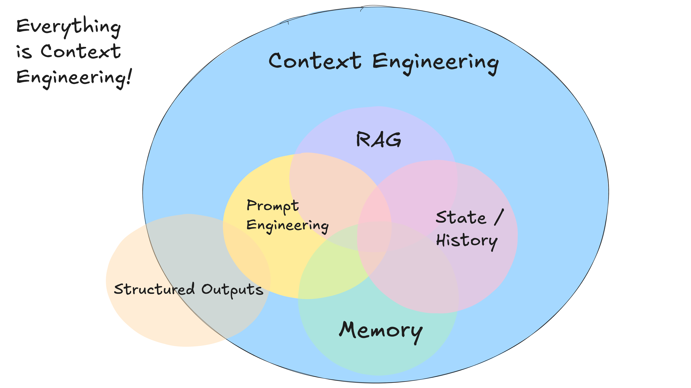
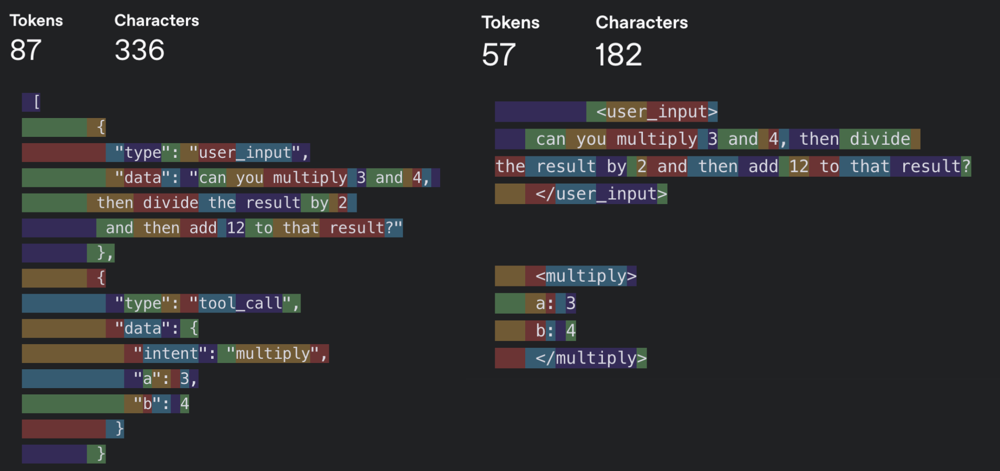
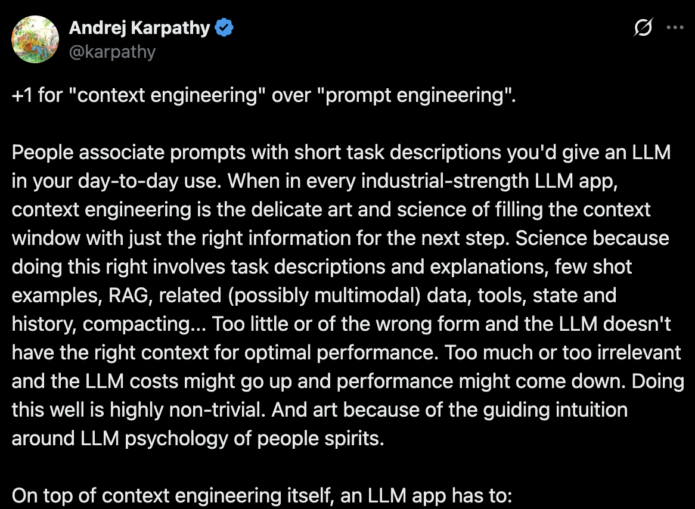
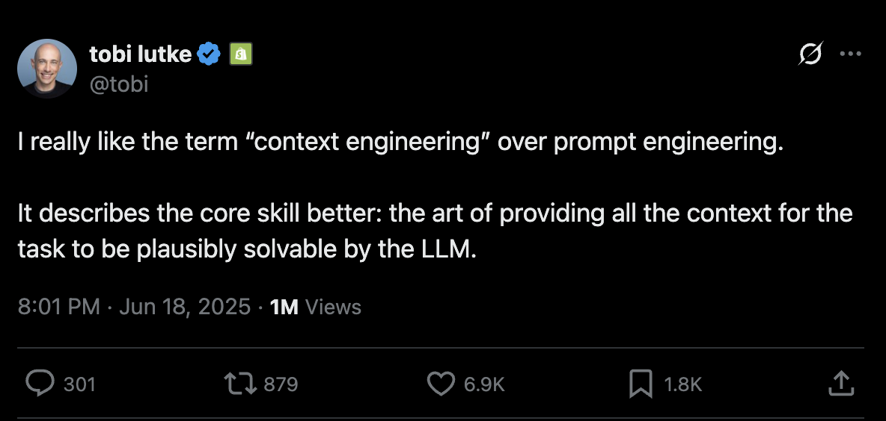
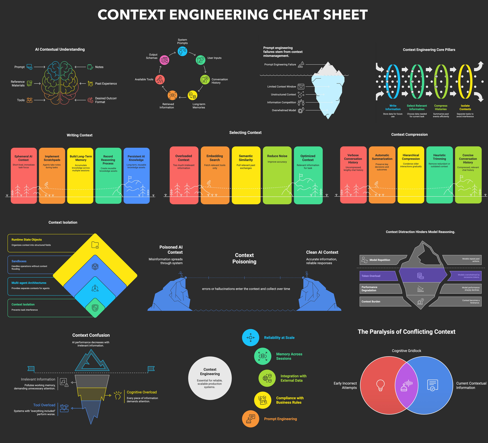

3. 自己掌握脈絡視窗（Own your context window）
把脈絡傳給 LLM，不一定得用標準的訊息格式。
在任何一個時間點，你送給代理裡那個 LLM 的輸入都是：「目前為止發生了這些事，下一步是什麼」
一切都是脈絡工程（context engineering）。LLM 是無狀態的函式，把輸入轉成輸出。要拿到最好的輸出，就得給它最好的輸入。
好的脈絡涵蓋這些東西：
- 你給模型的提示與指令
- 你檢索到的任何文件或外部資料（例如 RAG）
- 任何過去的狀態、工具呼叫、結果或其他歷史
- 來自相關但獨立歷史／對話的過去訊息或事件（記憶）
- 關於該輸出什麼結構化資料的指令

關於脈絡工程
這份指南講的是如何把當今的模型榨出最多價值。特別沒有提到的是：
- 調整模型參數，例如 temperature、top_p、frequency_penalty、presence_penalty 等等
- 訓練自己的補全或嵌入模型
- 微調既有模型
還是一樣，我不知道把脈絡交給 LLM 的最好方式是什麼，但我知道你會想要能嘗試所有做法的彈性。
標準脈絡格式與自訂脈絡格式（Standard vs Custom Context Formats）
多數 LLM 客戶端採用像這樣的標準訊息格式：
[
{
"role": "system",
"content": "You are a helpful assistant..."
},
{
"role": "user",
"content": "Can you deploy the backend?"
},
{
"role": "assistant",
"content": null,
"tool_calls": [
{
"id": "1",
"name": "list_git_tags",
"arguments": "{}"
}
]
},
{
"role": "tool",
"name": "list_git_tags",
"content": "{\"tags\": [{\"name\": \"v1.2.3\", \"commit\": \"abc123\", \"date\": \"2024-03-15T10:00:00Z\"}, {\"name\": \"v1.2.2\", \"commit\": \"def456\", \"date\": \"2024-03-14T15:30:00Z\"}, {\"name\": \"v1.2.1\", \"commit\": \"abe033d\", \"date\": \"2024-03-13T09:15:00Z\"}]}",
"tool_call_id": "1"
}
]這對多數使用情境都很好用。但如果你想把當今的 LLM 榨到極致，就得用最省 token、最能集中注意力（attention）的方式把脈絡送進 LLM。
除了標準訊息格式，你也可以打造一套為自己使用情境最佳化的自訂脈絡格式。例如用自訂物件，視情況打包／攤平成一個或多個 user、system、assistant 或 tool 訊息。
以下是把整個脈絡視窗放進單一 user 訊息的例子：
[
{
"role": "system",
"content": "You are a helpful assistant..."
},
{
"role": "user",
"content": |
Here's everything that happened so far:
<slack_message>
From: @alex
Channel: #deployments
Text: Can you deploy the backend?
</slack_message>
<list_git_tags>
intent: "list_git_tags"
</list_git_tags>
<list_git_tags_result>
tags:
- name: "v1.2.3"
commit: "abc123"
date: "2024-03-15T10:00:00Z"
- name: "v1.2.2"
commit: "def456"
date: "2024-03-14T15:30:00Z"
- name: "v1.2.1"
commit: "ghi789"
date: "2024-03-13T09:15:00Z"
</list_git_tags_result>
what's the next step?
}
]你提供的工具 schema 可能已經讓模型推斷出你要問的是 what's the next step，但把它寫進提示模板也沒什麼壞處。
程式碼範例
我們可以這樣建構：
class Thread:
events: List[Event]
class Event:
# could just use string, or could be explicit - up to you
type: Literal["list_git_tags", "deploy_backend", "deploy_frontend", "request_more_information", "done_for_now", "list_git_tags_result", "deploy_backend_result", "deploy_frontend_result", "request_more_information_result", "done_for_now_result", "error"]
data: ListGitTags | DeployBackend | DeployFrontend | RequestMoreInformation |
ListGitTagsResult | DeployBackendResult | DeployFrontendResult | RequestMoreInformationResult | string
def event_to_prompt(event: Event) -> str:
data = event.data if isinstance(event.data, str) \
else stringifyToYaml(event.data)
return f"<{event.type}>\n{data}\n</{event.type}>"
def thread_to_prompt(thread: Thread) -> str:
return '\n\n'.join(event_to_prompt(event) for event in thread.events)脈絡視窗範例
採用這個做法後，脈絡視窗可能長這樣：
最初的 Slack 請求：
<slack_message>
From: @alex
Channel: #deployments
Text: Can you deploy the latest backend to production?
</slack_message>列出 Git 標籤之後：
<slack_message>
From: @alex
Channel: #deployments
Text: Can you deploy the latest backend to production?
Thread: []
</slack_message>
<list_git_tags>
intent: "list_git_tags"
</list_git_tags>
<list_git_tags_result>
tags:
- name: "v1.2.3"
commit: "abc123"
date: "2024-03-15T10:00:00Z"
- name: "v1.2.2"
commit: "def456"
date: "2024-03-14T15:30:00Z"
- name: "v1.2.1"
commit: "ghi789"
date: "2024-03-13T09:15:00Z"
</list_git_tags_result>發生錯誤並恢復之後：
<slack_message>
From: @alex
Channel: #deployments
Text: Can you deploy the latest backend to production?
Thread: []
</slack_message>
<deploy_backend>
intent: "deploy_backend"
tag: "v1.2.3"
environment: "production"
</deploy_backend>
<error>
error running deploy_backend: Failed to connect to deployment service
</error>
<request_more_information>
intent: "request_more_information_from_human"
question: "I had trouble connecting to the deployment service, can you provide more details and/or check on the status of the service?"
</request_more_information>
<human_response>
data:
response: "I'm not sure what's going on, can you check on the status of the latest workflow?"
</human_response>接下來你的下一步可能是：
nextStep = await determine_next_step(thread_to_prompt(thread)){
"intent": "get_workflow_status",
"workflow_name": "tag_push_prod.yaml",
}XML 風格只是其中一個例子。重點是你能打造一套對自己的應用程式有意義的格式。能把不同脈絡結構、以及「哪些東西要存、哪些要傳給 LLM」都拿來實驗，品質就會更好。
自己掌握脈絡視窗的關鍵好處：
- 資訊密度：用最能讓 LLM 理解的方式組織資訊
- 錯誤處理：用有助於 LLM 恢復的格式納入錯誤資訊。錯誤與失敗的呼叫一旦解決，可以考慮把它們從脈絡視窗裡藏起來
- 安全：控制哪些資訊會傳給 LLM，把敏感資料濾掉
- 彈性：隨著你摸清使用情境而調整格式
- Token 效率：針對 token 效率與 LLM 理解最佳化脈絡格式
脈絡包含：提示、指令、RAG 文件、歷史、工具呼叫、記憶。
記住：脈絡視窗是你與 LLM 的主要介面。掌握如何組織與呈現資訊，能大幅提升代理的表現。
範例：資訊密度。同一則訊息，更少 token。

不是只有我這麼說
12-factor agents 發布約兩個月後，「脈絡工程」開始變成一個相當熱門的詞。


2025 年 7 月，@lenadroid 也做了一份相當不錯的脈絡工程速查表（Context Engineering Cheat Sheet）。

這裡一再出現的主題是：我不知道最好的做法是什麼，但我知道你會想要能嘗試所有做法的彈性。